Post Process Scan Effect
源地址：https://deepspacebanana.github.io/deepspacebanana.github.io/

I got some free time this weekend in between school-work, and I decided to go back to doing some shader doodles, I came up with the Post-Process Scan Effect. I imagine it being used in a game as some sort distance based scan Effect.And we also use some simple noise distortion to make the scan effect look a little more interesting
Note:If any of the images are not clear you can right-click and open in a new tab to view a Higher Resolution Version
In this section I’m going to breakdown how this effect was made in UE4, now there are multiple ways you could approach creating an effect like this, this jsut happens to be the method that I chose
High Level Components
The basic idea behind this effect is to create a sobel-edge/modified version of the scene render and then blend it between the regular scene render based on a World-Space Sphere mask, and this mask is animated to create the scanning effect.
This effect is primarily a combination of 3 main pieces
A Scaling Distance Field Sphere Mask
Sobel-Edge Post PRocess Function(I wont be expalining how this function works as it is a topic of its own, but I shall link the code I referenced)
World Projected Grid Texture Overlay
Scaling Distance Field Sphere
This deals with how we create the scaling sphere mask, we make use of a simple distance Field equation to create a sphere, here’s how it works.
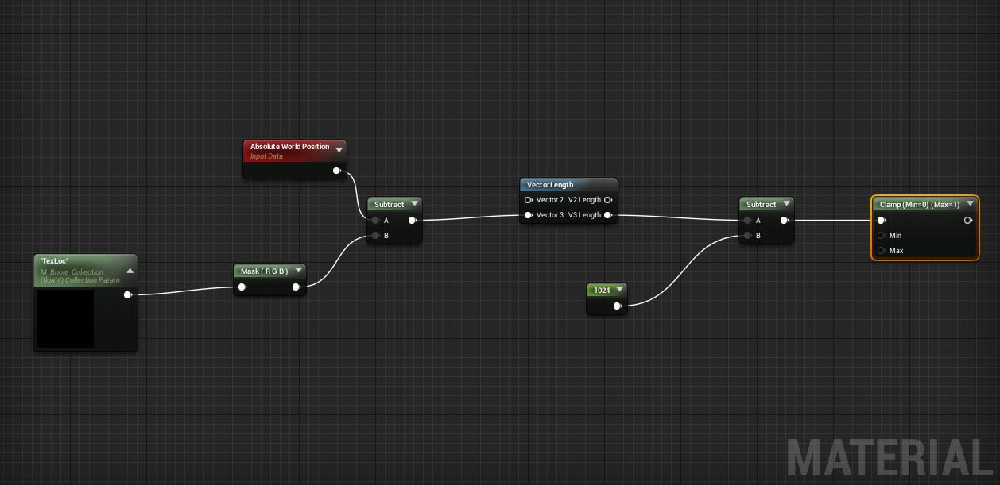
Plug in the result of the clamp into the emissive output of your Post-Process Material, and u will see something like this in your viewport.
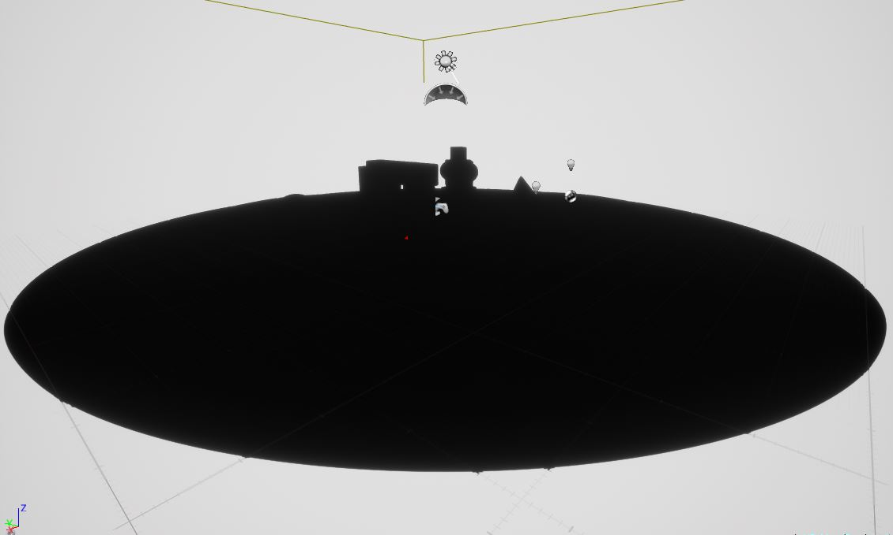
“TexLoc” is a vector3 that defines the location of the origin of the sphere, in my case I have it being read from a Parameter Collection, so that it can be read from gmeplay to use for eg the Player Position, but this value basically represents the location of the center of the sphere mask.
The bbove bit of “Node-Code” basically defines a Distance Field Sphere with a radius of 1024 units, I used the clamp jsut to show the result in the viewport as the actualy values go muc hHigher than 1. If you would like a deepdive on distance Fields and their uses I highly reccomend checking out Inigo Quillez’s website
Now we are going to use a Time Variable to Scale this Sphere Over Times
This will result in something like this
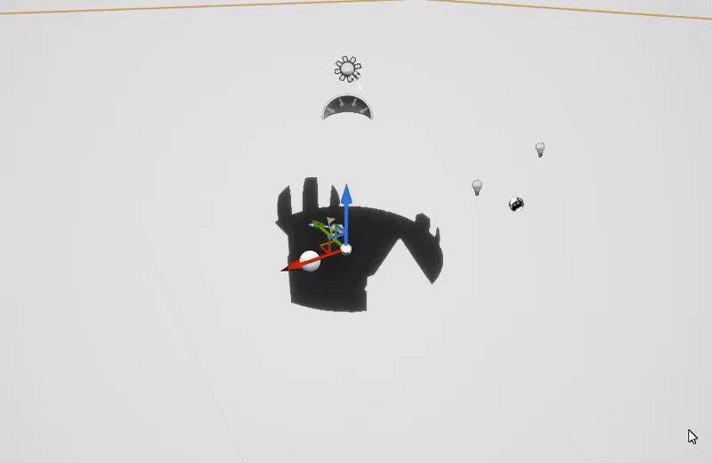
Frac(time) basically gives us a constant period that keeps going 0-1,0-1,0-1. We multiply time by a small number 0.25 to control the scaling speed and then we multiple ply the Fraction result with the radius of the sphere, this makes the radius go from 0-1024, tus giving us an animated sphere mask.
This is good progress, but this does not work for out effect, we need a scaling ring. This can be easily accomplished with a little bit of math on our current result.
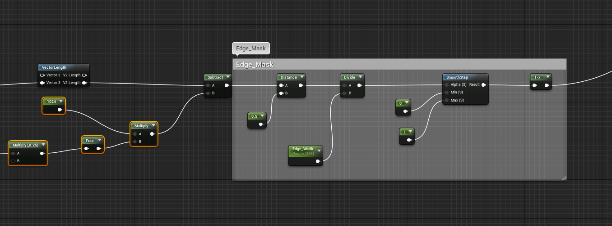
This will give us what we want, basically a growing ring, with a nice gradient falloff which can be controlled.

The bit of math under “Edge Mask” basically samples a positon in the gradient of the distance Field, in this case 0.5 and defines an edge mask from that position with a specified width, this is what gives us a nice scaling ring. I will not go into too much detail aboutthis technique of edge masking, maybe I’ll cover it in mroe detail in another post.
As you can see whe have complete control over how wide the ring is with out scalar parameter, and if we wantedwe could even control the falloff with a power node, but that is not required forthis effect
The nest step is to use some noise, to create some interesting variation to the ring
For this we make use of UE4’s “Vector Noise Node”, you can read more about it here, you could alternatively just use a custom noise texture that has WorldALigned UV COordinates
In my Shader I set the Vector Noise Node to use “CellNoise”, feel free to experiment with other nosie types to get you own unique effect
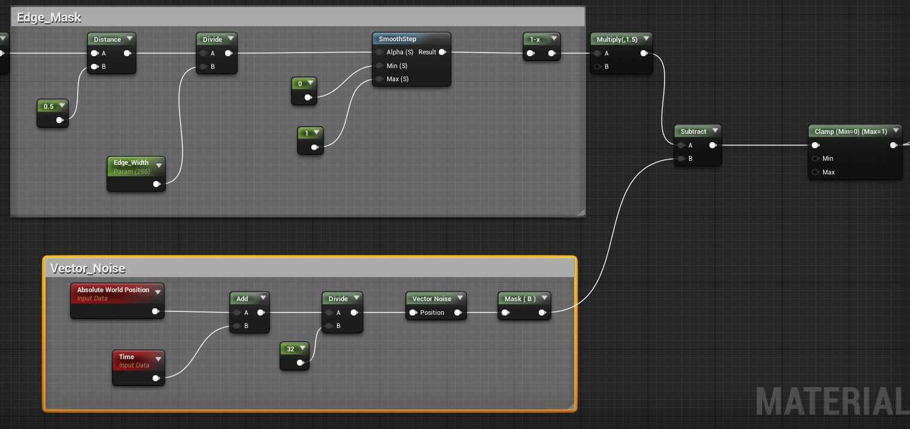
The result will look something like this

This concludes the First Step of our shader, next we will look at the Implementing the Sobel-Edge Function
Sobel Edge Function
There are many different variations of this function, some more optimized than others, I am not explain this function as it is a topic of it’s own, but a simple google search should give you an abundance of resources
The basic idea behind Sobel-Edge Detection is this, we take the scene RenderTarget(Imagine this as a texture that holds what you currently see in your viewport)and compare each pixel with all the neighbouring pixels around it, and we compare the difference in brightness, if the brightness difference is above a certain threshold, we mark it as an edge, and in this process we get a black and white mask texture of the scene rendertarget, that has the edges masked out.
The code below is a simple example of a sobelEdge Function made in Shadertoy by RebelMoogle(I think this one isn’t fully optimized, maybe try another one), we will recreate it in UE4 with the Material Nodes
1 | void mainImage( out vec4 fragColor, in vec2 fragCoord ) |
In UE4 it looks like this:
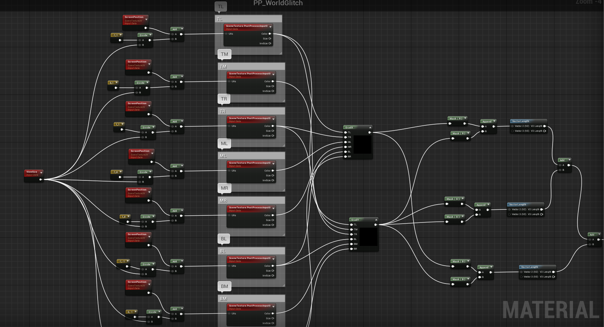
A few notes about this setup make sure that your “SceneTexture” nodes are set to use “PostProcessInput0”
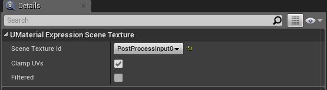
The two Custom Nodes GradX and Grady, use the following:
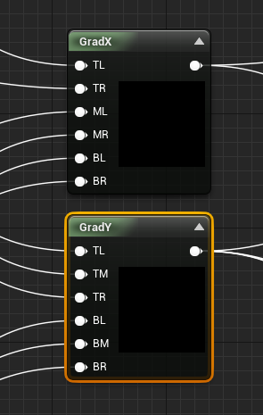
- GradX:
1 | return -TL + TR - 2.0 * ML + 2.0 * MR - BL + BR; |
- GradY:
1 | return TL + 2.0 * TM + TR - BL - 2.0 * BM - BR; |
This does not necessarily have to be done with a custom node, i used it merely for convenience sake, as otherwise it would have been too much node spaghetti.
If you plug in the end result of this Node Network to the emissive channel, you will see somthing like this in your Viewport
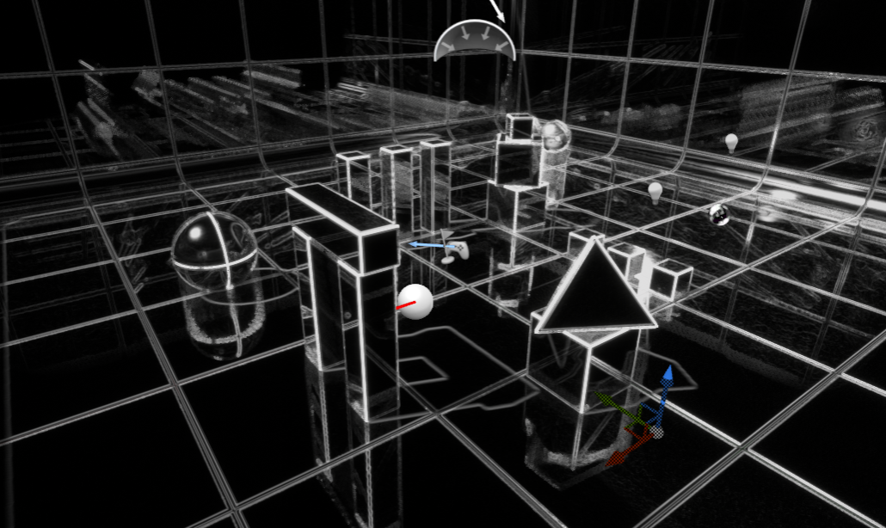
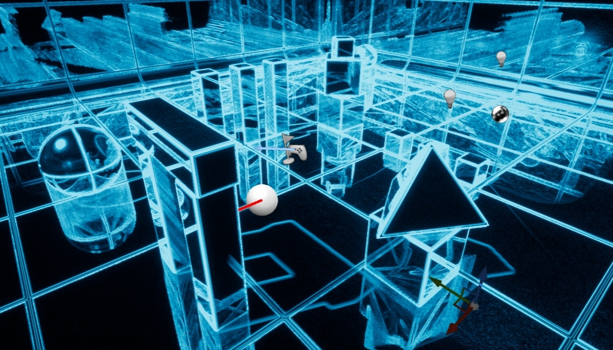
We also multiply this result with a simple Vector3 so that we can tint the edges whatever color we want
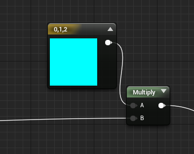
World-Aligned Grid Texture
This part is easy we just use a simple grid texture and make it world aligned, and later combine it with the sobel-edge fucntion to get a cool BluePrint graph type effect
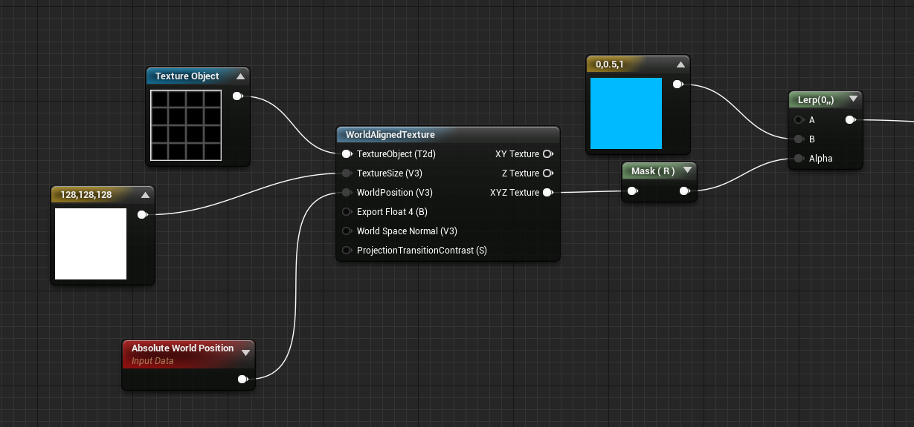
If you plug this into the emissive, it looks like this
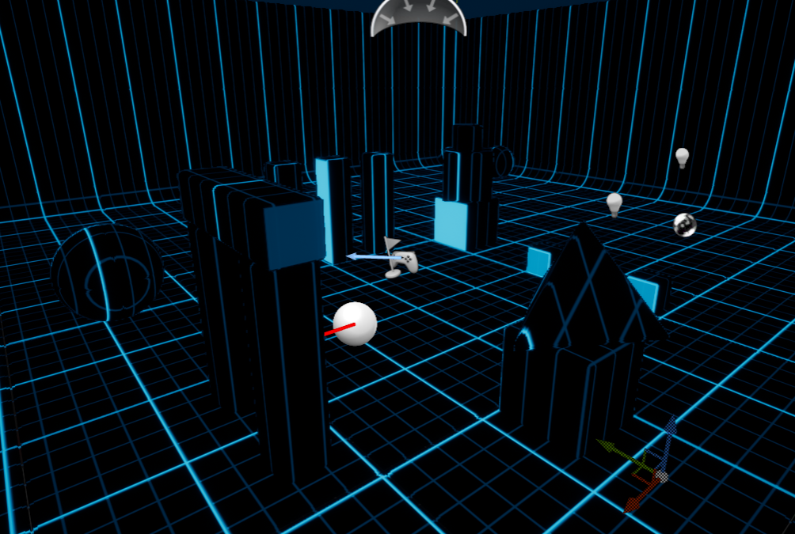
Bringing it All Together!
Now we will bring all three parts together, for the final Effect!
First we will combine the Sobel-Edge function and the World-Aligned Grid Function by adding them together
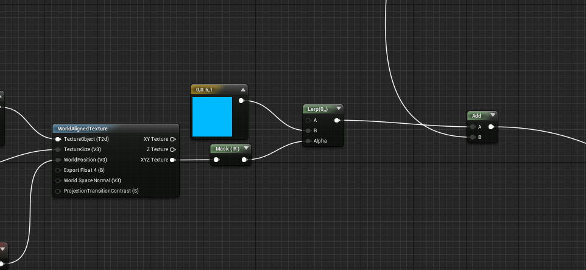
Next we create a sceneTexture Node and add the result from the sobeledge and World Grid to it
Then we Interpolate between the regular sceneTexture and the Added one, using the result of the scaling ring mask we created in the first part
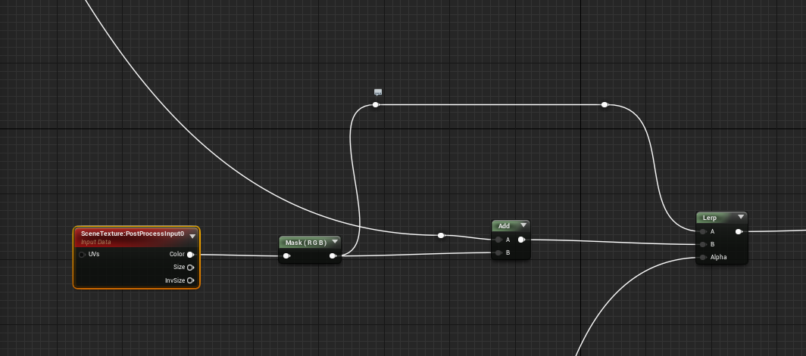
And voila we are done, The end result will look something like this. You can of course tweak the parameters and try changing some values to get different results

I hope you found this informative, cheers
关于本文
本文作者 Master Gong Sheng, 许可由 CC BY-NC 4.0.